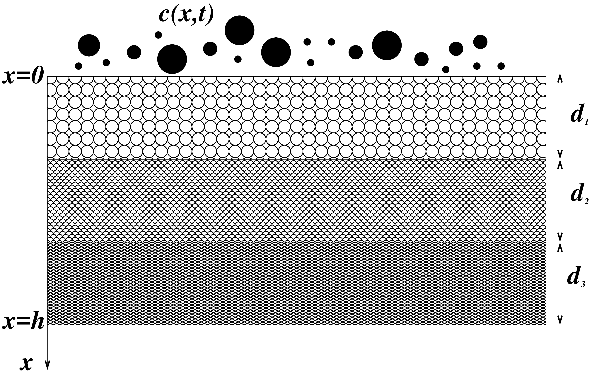

Flow and Fouling in a Pleated Membrane Filter
| Pleated membrane filters are widely used in many applications, and offer significantly better surface area to volume ratios than equal-area unpleated membrane filters. However, their filtration characteristics are markedly inferior to those of equivalent unpleated membrane filters in dead-end filtration. While several hypotheses have been advanced for this, one possibility is that the flow field induced by the pleating leads to spatially non-uniform fouling of the filter, which in turn degrades performance. In this work we investigate this hypothesis by developing a simplified model for the flow and fouling within a pleated membrane filter. Our model accounts for the pleated membrane geometry (which affects the flow), for porous support layers surrounding the membrane, and for two membrane fouling mechanisms: (i) adsorption of very small particles within membrane pores; and (ii) blocking of entire pores by large particles. We use asymptotic techniques based on the small pleat aspect ratio to solve the model, and we compare solutions to those for the closest-equivalent unpleated filter. |  |
Flow and Fouling in Membrane Filters: Effects of Membrane Morphology
| Membrane filters are used extensively in microfiltration applications. The type of membrane used can vary widely depending on the particular application, but broadly speaking the requirements are to achieve fine control of separation, with low power consumption. The solution to this challenge might seem obvious: select the membrane with the largest pore size and void fraction consistent with the separation requirements. However, membrane fouling (an inevitable consequence of successful filtration) is a complicated process, which depends on many parameters other than membrane-pore size and void fraction; and which itself greatly affects the filtration process and membrane functionality. In this work we formulate mathematical models that can (i) account for the membrane internal morphology (internal structure, pore size and shape, etc.); (ii) describe fouling of membranes with specific morphology; and (iii) make some predictions as to what type of membrane morphology might offer optimum filtration performance. |  |
Membrane Filtration with Complex Branching Pore Morphology
| Membrane filters are in widespread industrial use, and mathematical models to predict their efficacy are potentially very useful, as such models can suggest design modifications to improve filter performance and lifetime. Many models have been proposed to describe particle capture by membrane filters and the associated fluid dynamics, but most such models are based on a very simple structure in which the pores of the membrane are assumed to be simple circularly cylindrical tubes spanning the depth of the membrane. Real membranes used in applications usually have much more complex geometry, with interconnected pores that may branch and bifurcate. Pores are also typically larger on the upstream side of the membrane than on the downstream side. We present an idealized mathematical model, in which a membrane consists of a series of bifurcating pores, which decrease in size as the membrane is traversed. Feed solution is forced through the membrane by applied pressure and particles are removed from the feed by adsorption within pores (which shrinks them). Thus, the membrane’s permeability decreases as the filtration progresses. We discuss how filtration efficiency depends on the characteristics of the idealized branching structure. |  |
Membrane Filtration with Multiple Fouling Mechanisms
| Manufacturers of membrane filters have an interest in optimizing the internal pore structure of the membrane to achieve the most efficient filtration. As filtration occurs, the membrane becomes fouled by impurities in the feed solution, and any model of filter performance must account for this. In this work, we present a simplified mathematical model, which (i) characterizes membrane internal pore structure via permeability or resistance gradients in the depth of the membrane; (ii) accounts for multiple simultaneous membrane fouling mechanisms (adsorption, blocking and cake formation); (iii) defines a measure of filter performance; and (iv) for given operating conditions, is able to predict the optimum permeability or resistance profile for the chosen performance measure. |  |
On the Influence of Pore Connectivity on Performance of Membrane Filters
| We study the influence of a membrane filter's internal pore structure on its flow and adsorptive fouling behaviour. Membrane performance is measured via 1) comparison of flux-throughput characteristics during filtration; and 2) control of concentration of foulants at membrane pore outlets. Taking both measures into account, we address the merits and drawbacks of selected membrane pore structures. We first model layered planar membrane structures with intra-layer pore connections, and present comparisons between non-connected and connected structures. Our model predicts that membrane filters with connected pore structures lead to higher total throughput than those with non-connected structures, over the filter lifetime. We also provide a sufficient criterion for the concentration of particles escaping the filter to achieve a maximum in time (indicative of a membrane filter whose particle retention capability can deteriorate). Additionally, we find that spatial inhomogeneity in the pore-size distribution influences performance of filters differently when their pores have different connectivity properties. |
Modeling and Design Optimization for Pleated Membrane Filters
| Pleated membrane filters, which offer larger surface area to volume ratios than unpleated membrane filters, are used in a wide variety of applications. However, the performance of the pleated filter, as characterized by a flux-throughput plot, indicates that the equivalent unpleated filter provides better performance under the same pressure drop. Earlier work (Sanaei~\& Cummings 2016) used a highly-simplified membrane model to investigate how the pleating effect and membrane geometry affect this performance differential. In this work, we extend this line of investigation and use asymptotic methods to couple an outer problem for the flow within the pleated structure to an inner problem that accounts for the pore structure within the membrane. We use our new model to formulate and address questions of optimal membrane design for a given filtration application. |
On the Performance of Multilayered Membrane Filters
| Multilayered membrane filters, which consist of a stack of thin porous membranes with different properties (such as pore size and void fraction), are widely used in industrial applications to remove contaminants and undesired impurities (particles) from a solvent. It has been observed experimentally that the performance of well-designed multilayer structured membranes is markedly better than that of equivalent homogeneous membranes. Mathematical characterization and modeling of multilayered membranes can help our understanding of how the properties of each layer affect the performance of the overall membrane stack. In this paper, we present a simplified mathematical model to describe how the pore-scale properties of a multilayered membrane affect the overall filter performance. |  |
Diffusion Effects on Filtration Process
| Membrane science is a known area of study, which motivates the development and improvement of filtration technology in various industries. Membrane filters structures are equipped with specific properties, such as pore size and void fraction, which both vary depending on different applications. The requirement of filtration is to achieve the separation of particles and fluid, while minimizing the energy consumption at the same time. However, membrane fouling is inevitable during the filtration process and affects membrane functionality in any filtration stage. Membrane fouling is a very complex process and is determined by many properties such as the membrane internal morphology, internal membrane pore structure, flow rate and contaminant properties. In a very slow filtration process or during the late stage of filtration, when the flow rate is naturally low and P\'eclet number is small, particle diffusion is essential and can not be neglected, while in typical filtration models, especially in moderate and fast filtration process, it is completely ignored. The objective of this study is to investigate how filtration process changes under possible effects brought by particle diffusion. We discuss how membrane morphology evolves and investigate the filtration performance during the filtration process. We also compare the results with the situation where diffusion is less important (in a fast filtration process) and make a prediction about what kind of membrane filter should be employed to achieve a particular optimum filtration performance in a slow process. |  |